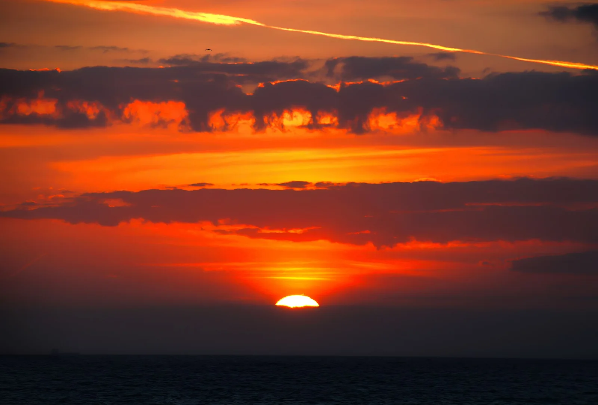

Hardelot-Plage
Pas-de-Calais, France · kitesurf, windsurf, baignade, surf

Longue plage entre dunes et forêt, spot familial réputé pour le kite et le windsurf à marée basse.
- Lieu
- Pas-de-Calais, France
- Niveau
- Débutant
- Activités
- kitesurf, windsurf, baignade, surf
- Type d'eau
- Mer / océan
- Coordonnées
- 50.63, 1.58 (position approximative du secteur)
Dangers à connaître
- Estran très plat, marée rapide.
- Vent souvent onshore soutenu.
Le conseil d'Ocean Buddy
Le meilleur plan d’eau se forme autour de la marée basse.
Ouvrir dans Ocean Buddy Télécharger sur l'App Store
Source : Description historique Ocean Buddy · vérification externe en attente.